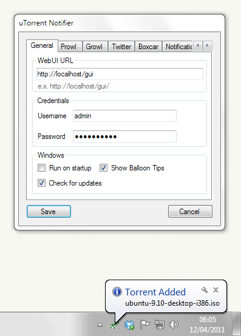

uTorrent Notifier
uTorrent Notifier is an application that runs in the system tray and connects to a remote uTorrent process to notify you when new torrents are added, a download completes, etc.
Along with running as a client you can also use it to send Growl, Prowl, Twitter and Boxcar notifications by setting it up on the same computer uTorrent is installed on.
There is also a linux command line tool that can be run as a daemon, which can send prowl, boxcar and syslog notifications. It can be found at https://github.com/ejholmes/utorrent-notifier-daemon
Dependencies
.NET Framework 3.5
Install
- Download
- Install
- Run, right click on the icon in the system tray, click settings
- Enter the url for your uTorrent WebUI (e.g. http://localhost/gui/)
- Enter your username and password
- Click save
- Profit!
Authors
Eric Holmes (eric@ejholmes.net)
Contributors
Ryan Farley (http://ryanfarley.com)
Dave Nicoll (http://davenicoll.com)
Contact
Eric Holmes (eric@ejholmes.net)
Download
Download the most recent installer.
See what people have to say about it on Software Informer.
You can download this projects source in either zip or tar formats.
You can also clone the project with Git by running:
$ git clone git://github.com/ejholmes/uTorrent-Notifier